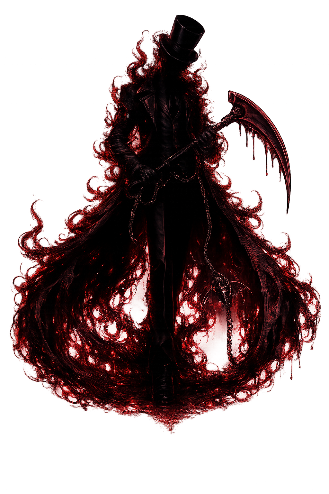
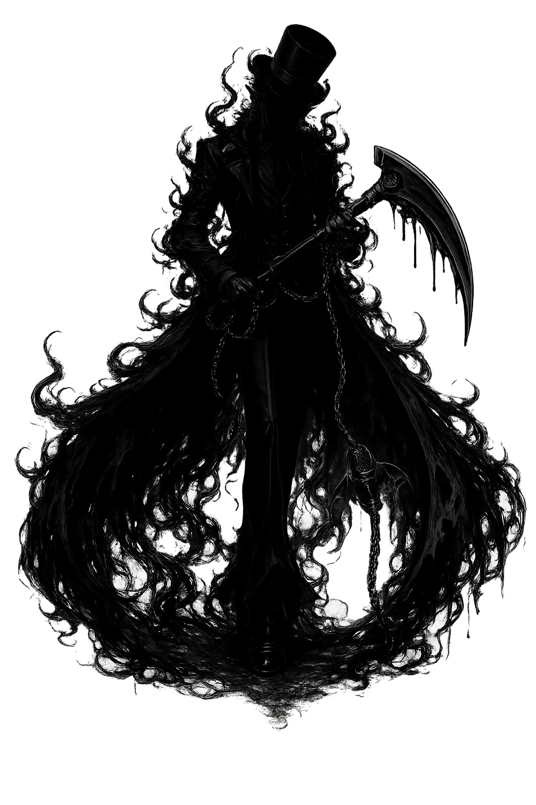
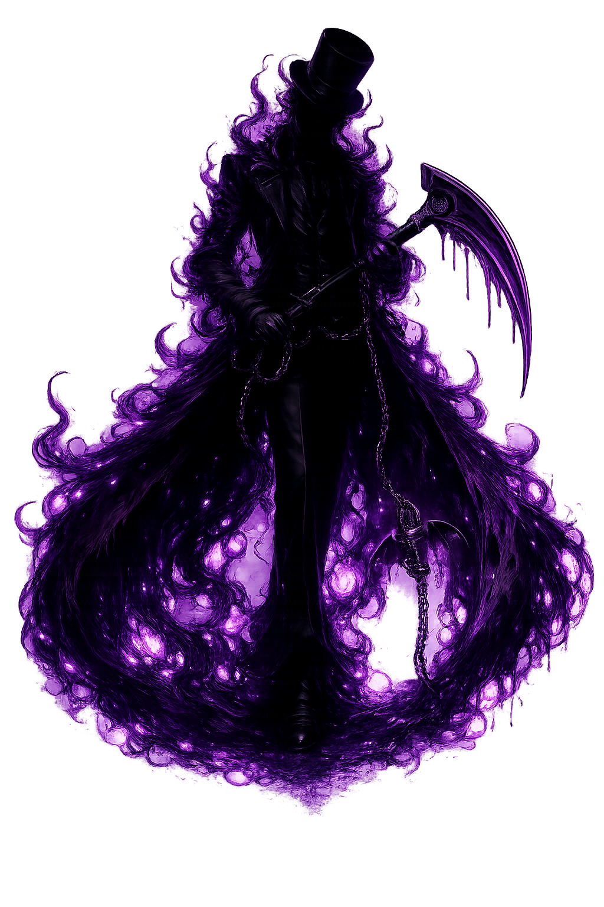

Imagens sombrias desviam ataques e retaliam quando são destruídas.
AtualValor fixo ou sem rolagem
Próximo aumentoSem outro aumento
MáximoNão se aplica
AutomaçãoAutomática
Véu, Vazio e Voz transformam sombra, fome e performance em controle de campo.

Destruição
Ordem
CaosKit-base de Sombra Animada, imagens, sussurro, Ecos e Noite Viva.
Imagens sombrias desviam ataques e retaliam quando são destruídas.
Uma nota impossível causa dano de vazio com salvamento básico de Vontade.
Pipping altera o ritmo percebido e força movimento seguro.